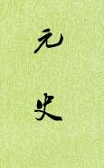

| 历史史籍 > |
| 元史 |
| 作者：宋濂 主编 |
|
元史，纪传体断代史，本纪47卷、志58卷、表8卷、列传97卷，共210卷。记述了从蒙古族兴起到元朝建立再到元朝北逃蒙古高原的历史。洪武二年（1369）二月初一，在南京的天界寺正式开局编写，以左丞相李善长为监修，宋濂、王袆为总裁，征来山林隐逸之士汪克宽、胡翰、赵埙等十六人参加纂修。这次编写至八月十一日结束，仅用了188天的时间。 由于编纂的时间太仓促，缺乏顺帝时代的资料，全书没有完成，于是派欧阳佑等人到全国各地调集顺帝一朝资料，于洪武三年二月六日重开史局，仍命宋濂、王祎为总裁，率领赵埙，朱右、贝琼等15人继续纂修，经过143天，七月初一书成，两次纂修，历时共331天。 [2019/3/17，重新整理] |
 |